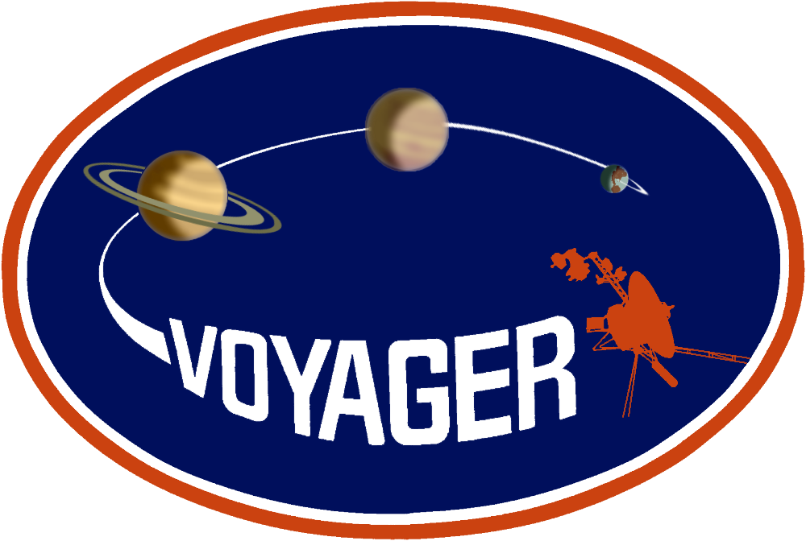

"Космические исследовательские миссии" — это сайт, содержащий информацию о запусках космических аппаратов, которые использовались для исследования планет, комет, астероидов, Солнца и космического пространства в пределах Солнечной системы, с выходом за пределы околоземной орбиты. На сайте представлены некоторые межпланетные космические миссии таких стран, как Советский Союз, Соединёные штаты и Китай.

«Спутник-1» — первый в мире искусственный спутник Земли, советский космический аппарат, запущенный на орбиту 4 октября 1957 года (в течение Международного геофизического года). Кодовое обозначение спутника — «ПС-1» («Простейший Спутник-1»). Запуск был осуществлён с 5-го научно-исследовательского полигона Министерства обороны СССР «Тюра-Там» (получившего впоследствии открытое наименование космодром «Байконур») на ракете-носителе «Спутник», созданной на базе межконтинентальной баллистической ракеты «Р-7».
Далее...
«Вояджер» (англ. Voyager — «Путешественник») — название двух американских космических зондов, запущенных в 1977 году, а также проекта по исследованию дальних планет Солнечной системы с участием аппаратов данной серии. Всего было создано и отправлено в космос два аппарата серии «Вояджер»: «Вояджер-1» и «Вояджер-2». Аппараты были созданы в Лаборатории реактивного движения НАСА. Проект считается одним из самых успешных и результативных в истории межпланетных исследований — оба «Вояджера» впервые передали качественные снимки Юпитера и Сатурна, а «Вояджер-2» впервые достиг Урана и Нептуна. «Вояджеры» стали третьим и четвёртым космическими аппаратами, план полёта которых предусматривал вылет за пределы Солнечной системы.
Далее...